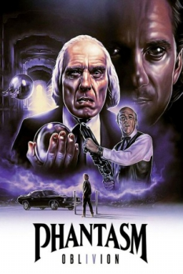

Country:United States, 90 minutes
Spoken languages:
Genres:Horror, Sci-Fi
Director(s):Don Coscarelli
Writer(s):Don Coscarelli
Video Codec:Unknown
Number: 950


Certification:R
Storyline:
Taking off immediately where the last one ended, in this episode Mike travels across dimensions and time fleeing from the Tall Man, at the same time he tries to find the origins of his enemy, and what really happened the night that his brother died. Meanwhile, Reggie battles the spheres and the undead in a quest to find Mike before the Tall Man can complete his transformation.
Cast:
Medium: Original DVD,
Comments: Part of Phantasm 5 Movie DVD Collection
Loaned: No
Aspect ratio: Unknown